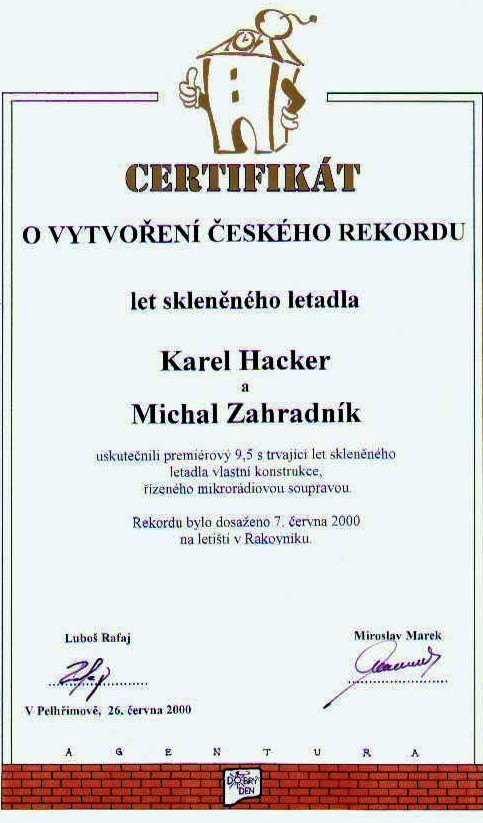

Letadlo
Do výroby skleněného letadla jsem se pustil s mým přítelem Karlem Hackerem, čistě jenom z hecu. Přiznávám, že kdyby nebylo alkoholu, nebylo by ani letadlo.


Vzorem byl letoun Lazy Bee (líná včela), který se nám svým poměrem nosné plochy křídla k předpokládané hmotnosti zdál být ideální. Kostra je vyrobena z tyčí o průměru 5 mm. Abych dosáhl co nejmenší vzletové hmotnosti, nedržel jsem se přísně výkresu, ale konstrukci bych nazval „volným pokračováním projektu“. Protože jsem neuvažoval o zavedení do sériové výroby, tak na žádný ohyb profilu křídla jsem nevyráběl šablonu, a tudíž je vše tvarováno od oka v ruce. To má ovšem za následek, že existují drobné odchylky mezi pravou a levou stranou křídla, čímž jsem následně ztížil práci pilotovi v udržení přímého letu.
Zprvu jsem zvažoval použít místo tyčí trubky a tím ještě více snížit konečnou hmotnost, dosti by tím ale vzrostla pracnost, a tak jsem podlehl svojí lenosti a zůstal u tyčí. Na vysvětlenou, obecně pro práci se sklem platí, že výroba z plného materiálu je jednodušší než z dutého. Jde totiž o to, že při zpracování dutých materiálů se značně projevuje teplotní roztažnost uvnitř uvězněného vzduchu, který se rozpíná a tím nafukuje zpracovávané místo. Aby se tomu zabránilo, je třeba mít někde otvor, ale pouze jediný, kterým se dá regulovat vnitřní tlak.
Technické údaje
Původně jsme zamýšleli vybavit letadlo modelářským spalovacím motorem, pak motorem na CO2, ale protože od myšlenky výroby letadla k jeho realizaci byly asi tři roky (nejsou lidi na práci), pokročil mezitím vývoj elektromotorů a baterií značně vpřed, a tak po drobných úpravách motorového lože jsme použili elektromotor Sprint 600 a baterie NiMH 750 mAh. Jak se později ukázalo, výkon motoru byl na spodní hranici výkonu.
První let
Po pečlivé předletové přípravě, kterou Karel provedl doma, jsme zvažovali, jak dál. Jestli provedeme zkušební let někde stranou a v tichosti, pak sebereme střepy a půjdem do hospody zapít žal, a nebo jestli to risknem a, přesvědčeni o kvalitě své práce, poletíme naostro.
Nakonec jsme se rozhodli, že je lepší vše vsadit na jednu kartu, a ohlásili jsme veřejný let na den 7. června 2000, konaný na letišti v Rakovníku. Přizvali jsme zástupce agentury „Dobrý den“ muzea rekordů a kuriozit v Pelhřimově a některá další média.


Počasí toho dne snad už horší být asi nemohlo. Silný nárazový vítr dával tušit, že první let bude i posledním. První pokus byl start rozjezdem po dráze. Tady se projevil naprosto nedostatečný výkon motoru, který ve spojení s větrem nedával prakticky možnost odstartovat. Proto se Karel rozhodl, že provede start z ruky. Vyčkal chvíle, kdy nebyl větší poryv větru, a hodil. A světe, div se. Letělo to. Pravda, na nějaké povely to moc nereagovalo, protože vzápětí po hodu zase funěl vítr ze všech stran, ale díky mistrovství pilota se nakonec přece jen podařilo let usměrnit a posléze i po 9,5 s trvajícím letu přistát do trávy.
Škody byly nepatrné a snadno opravitelné. Byl přeražen pouze jeden nosník trupu a jedna vzpěra u motoru. Ale jinak vše v pořádku.
Po zkušenostech s prvním letem jsme dospěli k názoru, že je naprosto nevyhnutelné osadit silnější motor. S tím je opět spojena úprava motorového lože a současně jeho předsunutí vpřed kvůli lepšímu vyvážení. Tím se ale dostáváme již do prací plánovaných a o nich budu zase psát, až se stanou skutečností.


Letu skleněného letadla byl vystaven certifikát o vytvoření českého rekordu.